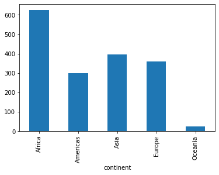
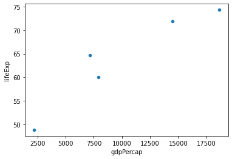
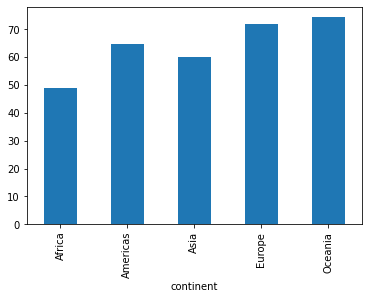
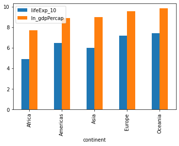
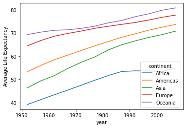
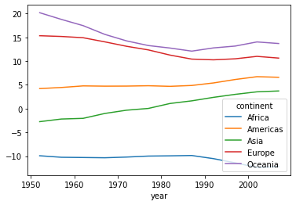
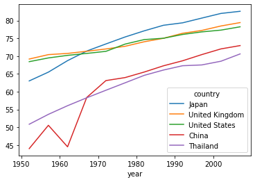
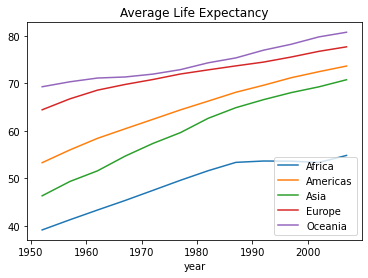
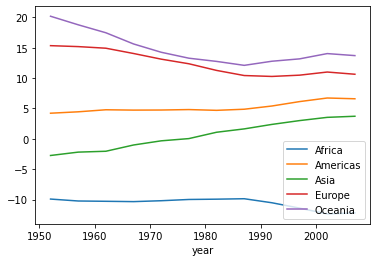

Gapminder¶
データ¶
import numpy as np
import pandas as pd
import matplotlib.pyplot as plt
from gapminder import gapminder
df = gapminder
df.head()
| country | continent | year | lifeExp | pop | gdpPercap | |
|---|---|---|---|---|---|---|
| 0 | Afghanistan | Asia | 1952 | 28.801 | 8425333 | 779.445314 |
| 1 | Afghanistan | Asia | 1957 | 30.332 | 9240934 | 820.853030 |
| 2 | Afghanistan | Asia | 1962 | 31.997 | 10267083 | 853.100710 |
| 3 | Afghanistan | Asia | 1967 | 34.020 | 11537966 | 836.197138 |
| 4 | Afghanistan | Asia | 1972 | 36.088 | 13079460 | 739.981106 |
df.tail()
| country | continent | year | lifeExp | pop | gdpPercap | |
|---|---|---|---|---|---|---|
| 1699 | Zimbabwe | Africa | 1987 | 62.351 | 9216418 | 706.157306 |
| 1700 | Zimbabwe | Africa | 1992 | 60.377 | 10704340 | 693.420786 |
| 1701 | Zimbabwe | Africa | 1997 | 46.809 | 11404948 | 792.449960 |
| 1702 | Zimbabwe | Africa | 2002 | 39.989 | 11926563 | 672.038623 |
| 1703 | Zimbabwe | Africa | 2007 | 43.487 | 12311143 | 469.709298 |
df.info()
<class 'pandas.core.frame.DataFrame'>
RangeIndex: 1704 entries, 0 to 1703
Data columns (total 6 columns):
# Column Non-Null Count Dtype
--- ------ -------------- -----
0 country 1704 non-null object
1 continent 1704 non-null object
2 year 1704 non-null int64
3 lifeExp 1704 non-null float64
4 pop 1704 non-null int64
5 gdpPercap 1704 non-null float64
dtypes: float64(2), int64(2), object(2)
memory usage: 80.0+ KB
df.describe()
| year | lifeExp | pop | gdpPercap | |
|---|---|---|---|---|
| count | 1704.00000 | 1704.000000 | 1.704000e+03 | 1704.000000 |
| mean | 1979.50000 | 59.474439 | 2.960121e+07 | 7215.327081 |
| std | 17.26533 | 12.917107 | 1.061579e+08 | 9857.454543 |
| min | 1952.00000 | 23.599000 | 6.001100e+04 | 241.165877 |
| 25% | 1965.75000 | 48.198000 | 2.793664e+06 | 1202.060309 |
| 50% | 1979.50000 | 60.712500 | 7.023596e+06 | 3531.846989 |
| 75% | 1993.25000 | 70.845500 | 1.958522e+07 | 9325.462346 |
| max | 2007.00000 | 82.603000 | 1.318683e+09 | 113523.132900 |
含まれる国名
countries = df.loc[:,'country'].unique()
countries
array(['Afghanistan', 'Albania', 'Algeria', 'Angola', 'Argentina',
'Australia', 'Austria', 'Bahrain', 'Bangladesh', 'Belgium',
'Benin', 'Bolivia', 'Bosnia and Herzegovina', 'Botswana', 'Brazil',
'Bulgaria', 'Burkina Faso', 'Burundi', 'Cambodia', 'Cameroon',
'Canada', 'Central African Republic', 'Chad', 'Chile', 'China',
'Colombia', 'Comoros', 'Congo, Dem. Rep.', 'Congo, Rep.',
'Costa Rica', "Cote d'Ivoire", 'Croatia', 'Cuba', 'Czech Republic',
'Denmark', 'Djibouti', 'Dominican Republic', 'Ecuador', 'Egypt',
'El Salvador', 'Equatorial Guinea', 'Eritrea', 'Ethiopia',
'Finland', 'France', 'Gabon', 'Gambia', 'Germany', 'Ghana',
'Greece', 'Guatemala', 'Guinea', 'Guinea-Bissau', 'Haiti',
'Honduras', 'Hong Kong, China', 'Hungary', 'Iceland', 'India',
'Indonesia', 'Iran', 'Iraq', 'Ireland', 'Israel', 'Italy',
'Jamaica', 'Japan', 'Jordan', 'Kenya', 'Korea, Dem. Rep.',
'Korea, Rep.', 'Kuwait', 'Lebanon', 'Lesotho', 'Liberia', 'Libya',
'Madagascar', 'Malawi', 'Malaysia', 'Mali', 'Mauritania',
'Mauritius', 'Mexico', 'Mongolia', 'Montenegro', 'Morocco',
'Mozambique', 'Myanmar', 'Namibia', 'Nepal', 'Netherlands',
'New Zealand', 'Nicaragua', 'Niger', 'Nigeria', 'Norway', 'Oman',
'Pakistan', 'Panama', 'Paraguay', 'Peru', 'Philippines', 'Poland',
'Portugal', 'Puerto Rico', 'Reunion', 'Romania', 'Rwanda',
'Sao Tome and Principe', 'Saudi Arabia', 'Senegal', 'Serbia',
'Sierra Leone', 'Singapore', 'Slovak Republic', 'Slovenia',
'Somalia', 'South Africa', 'Spain', 'Sri Lanka', 'Sudan',
'Swaziland', 'Sweden', 'Switzerland', 'Syria', 'Taiwan',
'Tanzania', 'Thailand', 'Togo', 'Trinidad and Tobago', 'Tunisia',
'Turkey', 'Uganda', 'United Kingdom', 'United States', 'Uruguay',
'Venezuela', 'Vietnam', 'West Bank and Gaza', 'Yemen, Rep.',
'Zambia', 'Zimbabwe'], dtype=object)
国数
len(countries)
142
continentの内訳
# continentのリスト
continent_list = np.sort(df.loc[:,'continent'].unique()).tolist()
continent_list
['Africa', 'Americas', 'Asia', 'Europe', 'Oceania']
# 国数を入れる空のリスト
num_countries = []
for i in continent_list:
# 条件
con = df.loc[:,'continent'] == i
# 条件が満たされる行を抽出
series_countries = df.loc[con,'country']
# 重複をなくす
series_countries_unique = series_countries.unique()
# 国数を数える
num = len(series_countries_unique)
# 上のリストに追加
num_countries.append(num)
for name, num in zip(continent_list,num_countries):
print(f'{name}: {num}')
Africa: 52
Americas: 25
Asia: 33
Europe: 30
Oceania: 2
sum(num_countries)
142
groupby()¶
df_group = df.groupby('continent')
from see import *
see(df_group)
.* [] < <= ==
!= > >= dir() hash()
iter() len() repr() str() .agg()
.aggregate() .all() .any() .apply()
.backfill() .bfill() .boxplot() .continent
.corr() .corrwith() .count() .country .cov()
.cumcount() .cummax() .cummin() .cumprod()
.cumsum() .describe() .diff() .dtypes
.expanding() .ffill() .fillna() .filter()
.first() .gdpPercap .get_group() .groups
.head() .hist() .idxmax() .idxmin()
.indices .last() .lifeExp .mad() .max()
.mean() .median() .min() .ndim
.ngroup() .ngroups .nth() .nunique()
.ohlc() .pad() .pct_change() .pipe()
.plot() .pop .prod() .quantile()
.rank() .resample() .rolling() .sample() .sem()
.shift() .size() .skew() .std() .sum()
.tail() .take() .transform() .tshift() .var()
.year
continentの内訳（again）¶
# Seriesを返す
country_names = df_group['country'].unique()
country_names
continent
Africa [Algeria, Angola, Benin, Botswana, Burkina Fas...
Americas [Argentina, Bolivia, Brazil, Canada, Chile, Co...
Asia [Afghanistan, Bahrain, Bangladesh, Cambodia, C...
Europe [Albania, Austria, Belgium, Bosnia and Herzego...
Oceania [Australia, New Zealand]
Name: country, dtype: object
N = len(country_names)
for i in range(N):
t0 = country_names[i]
t1 = len(t0)
print(country_names.index[i],':',t1)
Africa : 52
Americas : 25
Asia : 33
Europe : 30
Oceania : 2
統計量¶
three_vars=['lifeExp','pop','gdpPercap']
データ数¶
df_group.count()
| country | year | lifeExp | pop | gdpPercap | |
|---|---|---|---|---|---|
| continent | |||||
| Africa | 624 | 624 | 624 | 624 | 624 |
| Americas | 300 | 300 | 300 | 300 | 300 |
| Asia | 396 | 396 | 396 | 396 | 396 |
| Europe | 360 | 360 | 360 | 360 | 360 |
| Oceania | 24 | 24 | 24 | 24 | 24 |
df_group.size().plot(kind='bar')
pass

平均¶
df_group[three_vars].mean()
| lifeExp | pop | gdpPercap | |
|---|---|---|---|
| continent | |||
| Africa | 48.865330 | 9.916003e+06 | 2193.754578 |
| Americas | 64.658737 | 2.450479e+07 | 7136.110356 |
| Asia | 60.064903 | 7.703872e+07 | 7902.150428 |
| Europe | 71.903686 | 1.716976e+07 | 14469.475533 |
| Oceania | 74.326208 | 8.874672e+06 | 18621.609223 |
df_group.mean().plot(kind='scatter', x='gdpPercap', y='lifeExp')
pass

標準偏差¶
df_group[three_vars].std()
| lifeExp | pop | gdpPercap | |
|---|---|---|---|
| continent | |||
| Africa | 9.150210 | 1.549092e+07 | 2827.929863 |
| Americas | 9.345088 | 5.097943e+07 | 6396.764112 |
| Asia | 11.864532 | 2.068852e+08 | 14045.373112 |
| Europe | 5.433178 | 2.051944e+07 | 9355.213498 |
| Oceania | 3.795611 | 6.506342e+06 | 6358.983321 |
最大値¶
df_group.max()
| country | year | lifeExp | pop | gdpPercap | |
|---|---|---|---|---|---|
| continent | |||||
| Africa | Zimbabwe | 2007 | 76.442 | 135031164 | 21951.21176 |
| Americas | Venezuela | 2007 | 80.653 | 301139947 | 42951.65309 |
| Asia | Yemen, Rep. | 2007 | 82.603 | 1318683096 | 113523.13290 |
| Europe | United Kingdom | 2007 | 81.757 | 82400996 | 49357.19017 |
| Oceania | New Zealand | 2007 | 81.235 | 20434176 | 34435.36744 |
最小値¶
df_group.min()
| country | year | lifeExp | pop | gdpPercap | |
|---|---|---|---|---|---|
| continent | |||||
| Africa | Algeria | 1952 | 23.599 | 60011 | 241.165877 |
| Americas | Argentina | 1952 | 37.579 | 662850 | 1201.637154 |
| Asia | Afghanistan | 1952 | 28.801 | 120447 | 331.000000 |
| Europe | Albania | 1952 | 43.585 | 147962 | 973.533195 |
| Oceania | Australia | 1952 | 69.120 | 1994794 | 10039.595640 |
基本的統計
df_group[three_vars].describe()
| lifeExp | pop | gdpPercap | |||||||||||||||||||
|---|---|---|---|---|---|---|---|---|---|---|---|---|---|---|---|---|---|---|---|---|---|
| count | mean | std | min | 25% | 50% | 75% | max | count | mean | ... | 75% | max | count | mean | std | min | 25% | 50% | 75% | max | |
| continent | |||||||||||||||||||||
| Africa | 624.0 | 48.865330 | 9.150210 | 23.599 | 42.37250 | 47.7920 | 54.41150 | 76.442 | 624.0 | 9.916003e+06 | ... | 10801489.75 | 1.350312e+08 | 624.0 | 2193.754578 | 2827.929863 | 241.165877 | 761.247010 | 1192.138217 | 2377.417422 | 21951.21176 |
| Americas | 300.0 | 64.658737 | 9.345088 | 37.579 | 58.41000 | 67.0480 | 71.69950 | 80.653 | 300.0 | 2.450479e+07 | ... | 18340309.00 | 3.011399e+08 | 300.0 | 7136.110356 | 6396.764112 | 1201.637154 | 3427.779072 | 5465.509853 | 7830.210416 | 42951.65309 |
| Asia | 396.0 | 60.064903 | 11.864532 | 28.801 | 51.42625 | 61.7915 | 69.50525 | 82.603 | 396.0 | 7.703872e+07 | ... | 46300348.00 | 1.318683e+09 | 396.0 | 7902.150428 | 14045.373112 | 331.000000 | 1056.993223 | 2646.786844 | 8549.255654 | 113523.13290 |
| Europe | 360.0 | 71.903686 | 5.433178 | 43.585 | 69.57000 | 72.2410 | 75.45050 | 81.757 | 360.0 | 1.716976e+07 | ... | 21802867.00 | 8.240100e+07 | 360.0 | 14469.475533 | 9355.213498 | 973.533195 | 7213.085036 | 12081.749115 | 20461.386162 | 49357.19017 |
| Oceania | 24.0 | 74.326208 | 3.795611 | 69.120 | 71.20500 | 73.6650 | 77.55250 | 81.235 | 24.0 | 8.874672e+06 | ... | 14351625.00 | 2.043418e+07 | 24.0 | 18621.609223 | 6358.983321 | 10039.595640 | 14141.858698 | 17983.303955 | 22214.117110 | 34435.36744 |
5 rows × 24 columns
groupby.agg()¶
agg()を使うとよりメソッドだけではなく，他の関数も使える。
()の中に関数を入れる。
df_group.agg(np.mean)
| year | lifeExp | pop | gdpPercap | |
|---|---|---|---|---|
| continent | ||||
| Africa | 1979.5 | 48.865330 | 9.916003e+06 | 2193.754578 |
| Americas | 1979.5 | 64.658737 | 2.450479e+07 | 7136.110356 |
| Asia | 1979.5 | 60.064903 | 7.703872e+07 | 7902.150428 |
| Europe | 1979.5 | 71.903686 | 1.716976e+07 | 14469.475533 |
| Oceania | 1979.5 | 74.326208 | 8.874672e+06 | 18621.609223 |
df_group[three_vars].agg([np.max, np.min, np.mean])
| lifeExp | pop | gdpPercap | |||||||
|---|---|---|---|---|---|---|---|---|---|
| amax | amin | mean | amax | amin | mean | amax | amin | mean | |
| continent | |||||||||
| Africa | 76.442 | 23.599 | 48.865330 | 135031164 | 60011 | 9.916003e+06 | 21951.21176 | 241.165877 | 2193.754578 |
| Americas | 80.653 | 37.579 | 64.658737 | 301139947 | 662850 | 2.450479e+07 | 42951.65309 | 1201.637154 | 7136.110356 |
| Asia | 82.603 | 28.801 | 60.064903 | 1318683096 | 120447 | 7.703872e+07 | 113523.13290 | 331.000000 | 7902.150428 |
| Europe | 81.757 | 43.585 | 71.903686 | 82400996 | 147962 | 1.716976e+07 | 49357.19017 | 973.533195 | 14469.475533 |
| Oceania | 81.235 | 69.120 | 74.326208 | 20434176 | 1994794 | 8.874672e+06 | 34435.36744 | 10039.595640 | 18621.609223 |
# 自作の関数もOK
func = lambda x : (np.max(x)-np.min(x))/np.mean(x)
df_group['lifeExp','pop','gdpPercap'].agg(func)
<ipython-input-27-11f62f4671e9>:5: FutureWarning: Indexing with multiple keys (implicitly converted to a tuple of keys) will be deprecated, use a list instead.
df_group['lifeExp','pop','gdpPercap'].agg(func)
| lifeExp | pop | gdpPercap | |
|---|---|---|---|
| continent | |||
| Africa | 1.081401 | 13.611447 | 9.896297 |
| Americas | 0.666174 | 12.261971 | 5.850528 |
| Asia | 0.895731 | 17.115583 | 14.324219 |
| Europe | 0.530877 | 4.790574 | 3.343843 |
| Oceania | 0.162998 | 2.077754 | 1.310079 |
図¶
continent平均
df_lifeExp_continent = df_group['lifeExp'].mean()
df_lifeExp_continent.plot(kind='bar')
pass

クロス・セクション¶
df_mean = df_group.mean()
df_mean['ln_pop'] = np.log(df_mean['pop'])
df_mean['ln_gdpPercap'] = np.log(df_mean['gdpPercap'])
df_mean['lifeExp_10'] = df_mean['lifeExp']/10
df_mean[['lifeExp_10', 'ln_gdpPercap']].plot(kind='bar')
pass

複数階層のgroupby()¶
continent別の平均時系列を考えるときに有用。
df_group2 = df.groupby(['continent','year'])
df_group2.mean().head()
| lifeExp | pop | gdpPercap | ||
|---|---|---|---|---|
| continent | year | |||
| Africa | 1952 | 39.135500 | 4.570010e+06 | 1252.572466 |
| 1957 | 41.266346 | 5.093033e+06 | 1385.236062 | |
| 1962 | 43.319442 | 5.702247e+06 | 1598.078825 | |
| 1967 | 45.334538 | 6.447875e+06 | 2050.363801 | |
| 1972 | 47.450942 | 7.305376e+06 | 2339.615674 |
# lifeExpの列だけを選択した後，行はyear列はcontinentになるDataFrameに変換
df_lifeExp_group = df_group2.mean().loc[:,'lifeExp'].unstack(level=0)
df_lifeExp_group.plot()
plt.ylabel('Average Life Expectancy')
pass

世界平均との比較
df_group_year = df.groupby('year')
world_lifeExp = df_group_year.mean()['lifeExp'].values.reshape(1,12).T
df_lifeExp_diff = df_lifeExp_group - world_lifeExp
df_lifeExp_diff.plot()
pass

Multi-index¶
# sort_index()がないとWarningがでる場合がある(順番で並ぶとPythonが変数を探しやすくなる)
dfm = df.set_index(['continent','country','year']).sort_index()
dfm.head()
| lifeExp | pop | gdpPercap | |||
|---|---|---|---|---|---|
| continent | country | year | |||
| Africa | Algeria | 1952 | 43.077 | 9279525 | 2449.008185 |
| 1957 | 45.685 | 10270856 | 3013.976023 | ||
| 1962 | 48.303 | 11000948 | 2550.816880 | ||
| 1967 | 51.407 | 12760499 | 3246.991771 | ||
| 1972 | 54.518 | 14760787 | 4182.663766 |
continent, country, yearの３つがインデックス！
統計量¶
データ数¶
dfm.count(level=0)
| lifeExp | pop | gdpPercap | |
|---|---|---|---|
| continent | |||
| Africa | 624 | 624 | 624 |
| Americas | 300 | 300 | 300 |
| Asia | 396 | 396 | 396 |
| Europe | 360 | 360 | 360 |
| Oceania | 24 | 24 | 24 |
平均の計算¶
dfm.mean(level='continent')
# dfm.mean(level=0) も同じ
| lifeExp | pop | gdpPercap | |
|---|---|---|---|
| continent | |||
| Africa | 48.865330 | 9.916003e+06 | 2193.754578 |
| Americas | 64.658737 | 2.450479e+07 | 7136.110356 |
| Asia | 60.064903 | 7.703872e+07 | 7902.150428 |
| Europe | 71.903686 | 1.716976e+07 | 14469.475533 |
| Oceania | 74.326208 | 8.874672e+06 | 18621.609223 |
標準偏差¶
dfm.std(level='continent')
| lifeExp | pop | gdpPercap | |
|---|---|---|---|
| continent | |||
| Africa | 9.150210 | 1.549092e+07 | 2827.929863 |
| Americas | 9.345088 | 5.097943e+07 | 6396.764112 |
| Asia | 11.864532 | 2.068852e+08 | 14045.373112 |
| Europe | 5.433178 | 2.051944e+07 | 9355.213498 |
| Oceania | 3.795611 | 6.506342e+06 | 6358.983321 |
最大値・最小値¶
dfm.max(level='continent')
| lifeExp | pop | gdpPercap | |
|---|---|---|---|
| continent | |||
| Africa | 76.442 | 135031164 | 21951.21176 |
| Americas | 80.653 | 301139947 | 42951.65309 |
| Asia | 82.603 | 1318683096 | 113523.13290 |
| Europe | 81.757 | 82400996 | 49357.19017 |
| Oceania | 81.235 | 20434176 | 34435.36744 |
dfm.min(level='continent')
| lifeExp | pop | gdpPercap | |
|---|---|---|---|
| continent | |||
| Africa | 23.599 | 60011 | 241.165877 |
| Americas | 37.579 | 662850 | 1201.637154 |
| Asia | 28.801 | 120447 | 331.000000 |
| Europe | 43.585 | 147962 | 973.533195 |
| Oceania | 69.120 | 1994794 | 10039.595640 |
図¶
図（５カ国の時系列）
dfm_2 = dfm.droplevel(level=0,axis=0)
countries = ['Japan', 'United Kingdom', 'United States', 'China', 'Thailand']
dfm_2.loc[(countries),'lifeExp'].unstack(level=0).plot()
pass

lifeExpの世界平均との差
df_lifeExp_mi = pd.DataFrame()
for i in continent_list:
temp = dfm.loc[(i,),'lifeExp'].unstack(level=0).mean(axis=1)
df_lifeExp_mi[i] = temp
df_lifeExp_mi.plot()
plt.title('Average Life Expectancy')
pass

world_lifeExp_mi = dfm_2['lifeExp'].unstack(level=0).mean(axis=1).values.reshape(12,1)
df_lifeExp_diff_mi = df_lifeExp_mi - world_lifeExp_mi
df_lifeExp_diff_mi.plot()
pass
